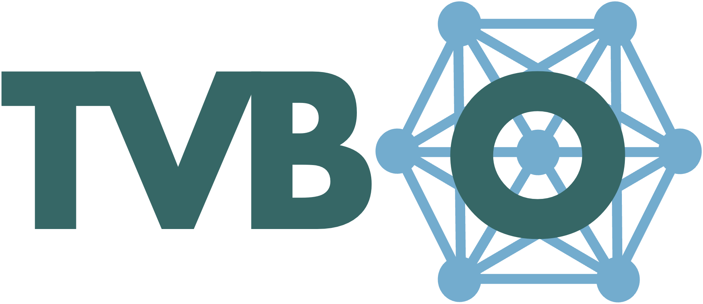

Brain Simulation Workshop
FAIR Brain Data Science Bootcamp · Track 4
Mechanistic Whole-Brain Simulation Workshop
Personalized brain network modeling with The Virtual Brain, ontology-driven model specification, and gradient-based optimization.
About
This two-day workshop introduces mechanistic whole-brain simulation with The Virtual Brain, ontology-driven model specification, and differentiable parameter optimization. Participants move from model definition to simulation, analysis, and parameter fitting in reproducible workflows.
The slides provide the conceptual map: brain network models, dynamical regimes, FAIR model specification, and inference. The notebooks turn those ideas into executable examples, including single-node dynamics, network coupling, noise, parameter exploration, bifurcation analysis, optimization, and stimulation. Examples connect the workflow to mechanistic and translational studies of decision dynamics, cortical waves, and task/rest fMRI separation (Schirner, Deco, and Ritter 2023; Koller, Schirner, and Ritter 2024; Kashyap et al. 2025).
Learning Goals
- Specify brain network models as reusable, machine-readable metadata.
- Simulate local dynamics, network coupling, noise, and stimulation.
- Interpret phase planes, stability, bifurcations, and regime maps.
- Fit and compare model parameters with optimization workflows.
Tools Used

Ontology-backed model specification for brain network simulations. TVB-O captures equations, parameters, networks, coupling, integrators, observations, and provenance in one reusable metadata record. It also provides a curated database of published models and experiments and generates executable simulation code (Martin et al. 2025).

Differentiable and accelerator-ready inference workflows for whole-brain models. TVB-Optim supports parallel simulation, automatic differentiation, and gradient-based fitting of large parameter spaces (Pille et al. 2025).